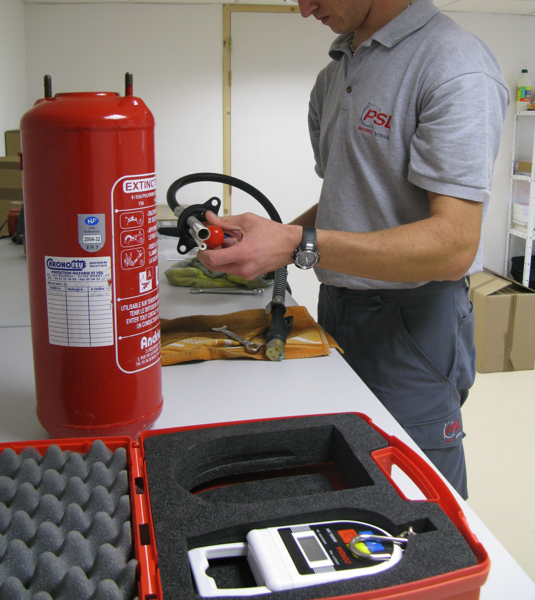

Vérification & maintenance
réglementaire annuelle
La réglementation française impose la vérification annuelle de l'ensemble des équipements de sécurité incendie par un organisme compétent. Ce n'est pas une option : en cas d'incendie avec des équipements non vérifiés, votre responsabilité civile et pénale est directement engagée — indépendamment de l'état réel de l'appareil.
PSL prend en charge l'intégralité de ce suivi annuel dans le cadre d'un contrat de maintenance. Une visite programmée, un rapport complet, une mise à jour du registre de sécurité, et un rappel automatique l'année suivante. Vous n'avez à vous occuper de rien.
Calendrier des vérifications réglementaires
| Équipement | Fréquence | Base légale |
|---|---|---|
| Extincteurs | Annuelle | NF S 61-920 / Art. R4227-39 |
| RIA | Annuelle | NF EN 671-3 |
| Épreuve tuyaux RIA | 5 ans | NF EN 671-3 § 7 |
| BAES — test batterie | Semestrielle | Art. EL 18 — Arrêté 25/06/80 |
| BAES — vérification complète | Annuelle | NF C 71-820 |
| Alarme incendie | Mensuelle + annuelle | NF S 61-936 |
| Plans de sécurité | À chaque modification | NF X 08-070 |
| Registre de sécurité | En continu | Art. R4227-56 Code du Travail |
Révision quinquennale des extincteurs : en plus de la vérification annuelle, les extincteurs font l'objet d'une révision complète tous les 5 ou 10 ans (selon le constructeur) incluant le remplacement de l'agent extincteur, le rechargement et les tests de pression. PSL assure cette prestation en atelier.

Contrat d'entretien annuel PSL
Signez un contrat unique qui couvre l'ensemble de vos équipements incendie. Avantages : visite programmée à date fixe, rapport de vérification PDF, mise à jour du registre de sécurité, rappel automatique, tarif préférentiel sur les pièces et consommables.
Demander un contrat de maintenance →Ce que comprend notre rapport de vérification :
- État général de chaque appareil (numéro de série, date de fabrication)
- Résultats des tests fonctionnels (pression, débit, autonomie)
- Liste des non-conformités détectées et plan d'action
- Visa technicien et date de prochaine vérification
- Mise à jour du registre de sécurité (page de vérification)